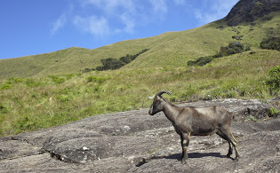
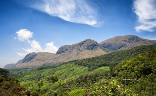

ERAVIKULAM NATIONAL PARK
Eravikulam National Park is a 97 km² national park located along the Western Ghats in the Idukki district of Kerala in India. Situated between 10º05'N and 10º20' north, and 77º0' and 77º10' east, it is the first national park in Kerala. Eravikulam National Park is administered by the Kerala Department of Forests and Wildlife, Munnar Wildlife Division, which also runs the nearby Mathikettan Shola National Park, Anamudi Shola National Park, Pambadum Shola National Park, Chinnar Wildlife Sanctuary and the Kurinjimala Sanctuary.

ANAMUDI
Anamudi is a mountain located in the Indian state of Kerala. It is the highest peak in the Western Ghats and South India, at an elevation of 2,695 metres and a topographic prominence of 2,479 metres. It lies on the border of Devikulam Taluk, Idukki district and Kothamangalam Taluk, Ernakulam district. The name Anamudi literally translates to "elephant's head" a reference to the resemblance of the mountain to an elephant's head.

MATTUPETTY DAM
Mattupetty Dam, near Munnar in Idukki District, is a storage Concrete Gravity dam built in the mountains of Kerala, India to conserve water for hydroelectricity. It has been a vital source of power yielding along with other such dams, huge revenue to the states. The large amount of perennially available water allows wild animals and birds to flourish. However salinity caused by irrigation and water-logging are of concern to environmentalists. Munnar is located near the confluence of the mountain streams of Muthirappuzha River, Chanduvarai River and Kundale River.